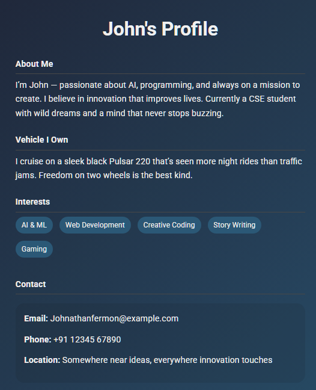
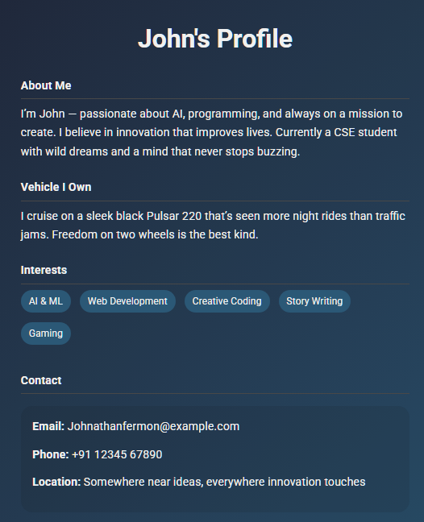

Summary
A forward-thinking Computer Science Engineering student with a passion for artificial intelligence, web development, and innovative technology. Enthusiastic about building impactful digital experiences and solving real-world problems through smart, creative solutions.Skilled in Java, mobile app development, and visual design tools like Blender, Lysander combines technical knowledge with creative thinking to craft tools, apps, and experiences that are both functional and futuristic. Enthusiastic about AI, mobile systems, and user experience, with a hands-on approach to learning and problem-solving. Adept in Java, web technologies, and currently exploring AI, automation, and mobile customization. Known for combining technical skills with a strong sense of curiosity, continuous learning, and a drive to create meaningful change in technology and society.
Education
Bachelor of Engineering in Computer Science
College of Engineering.
Expected Graduation: 2027
Focus Areas:
- Software Development
- Artificial Intelligence
- Web & Mobile Technologies
Projects
- Time Calculator (Java): Converts units from milliseconds to lightyears
- Android Calculator App (Java)
- Note-Taking App for Android (Java)
- Markdown-based Organization System using Logseq & SiYuan
Work Experience
Frontend Developer Intern
TechTonic Solutions Pvt. Ltd. – Remote
May 2024 – July 2024
- Built responsive UI components using HTML, CSS, and JavaScript
- Connected dynamic pages with REST APIs and enhanced user interaction
-
Worked in a team using Git, Trello, and Agile methodologies
Freelance Junior AI Contributor
OpenCog Labs (Remote, Community-Based)
Aug 2024 – Dec 2024
- Supported AI chatbot research by scripting simple data tools in Python
- Analyzed and improved conversation logic and flow
- Shared contributions in open research discussions and forums
Tech Support Intern
Mobilink Technologies
Jan 2023 – Mar 2023
- Assisted with Android ROM customizations and optimization settings
- Wrote automation scripts for backups and settings configuration
- Learned key elements of Android system behavior and performance tuning
Technical & Creative Projects
Time Unit Converter (Java)
- Developed a tool to convert time units from milliseconds to lightyears
- Implemented dynamic unit linking for seamless conversions
Android Calculator App (Java)
- Created a simple and reliable calculator app for Android devices
- Implemented error handling for smooth user experience
- Added gesture support for enhanced usability
Note-Taking App (Java, Android)
- Designed a sleek, offline-first note-taking app
- Included Markdown support for enhanced productivity
Markdown Workflow Systems
- Gained expertise in Logseq for structured note-taking and task management
- Explored SiYuan for advanced Markdown-based organization
- Customized productivity workflows for efficient management
Blender Animation Clips
- Modeled and animated scenes with basic lighting
- Created camera paths for dynamic scene movement
- Rendered animations using Blender's rendering engine
AAA Game Texture Modding
- Edited high-fidelity textures for enhanced visual quality
- Learned engine file handling for efficient modding
- Explored modding structures for AAA games
Phone System Tweaks
- Experimented with thermal control for mobile devices
- Optimized CPU behavior for better performance
- Enhanced background process management
 
